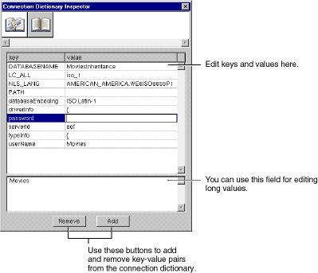

EOModeler displays a login panel that contains values taken from the model's connection dictionary.
 Table of Contents
Table of Contents  Previous Section
Previous Section
When you initialize an adaptor from a model, any connection information stored with the model is copied into the adaptor object.
The connection dictionary contains the last values you entered in the login panel and saved as a part of your model (so long as you haven't manually edited the connection dictionary in your model file). You can change the connection dictionary's values from EOModeler; this is called setting adaptor information.
To set adaptor information:
EOModeler displays a login panel that contains values taken from the model's connection dictionary.
You can also edit the connection dictionary in its raw form using the Connection Dictionary Inspector. This provides you access to connection dictionary entries that the login panel doesn't configure. To use the Connection Dictionary Inspector, select the model icon in the Model Editor, and display the Inspector.

Figure 48. Connection Dictionary Inspector
For more discussion of how Enterprise Objects Framework manages database connections and connection dictionaries, see the chapter "Connecting to the Database" in the book Enterprise Objects Framework Developer's Guide.
This displays a New Model panel listing all the available adaptors.
EOModeler displays the login panel for the database that corresponds to the adaptor you selected.
Table of Contents  Next Section
Next Section